Il QR è sul tavolo. Il cliente sfoglia il menù nella sua lingua — e l'ordine arriva in cucina sia che lo invii tu, sia che lo invii direttamente lui.
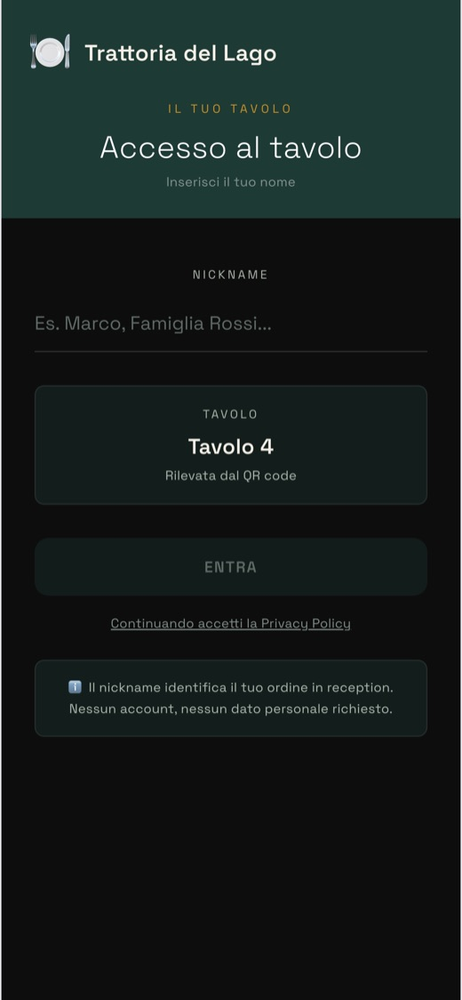
Inquadra il QR al tavolo
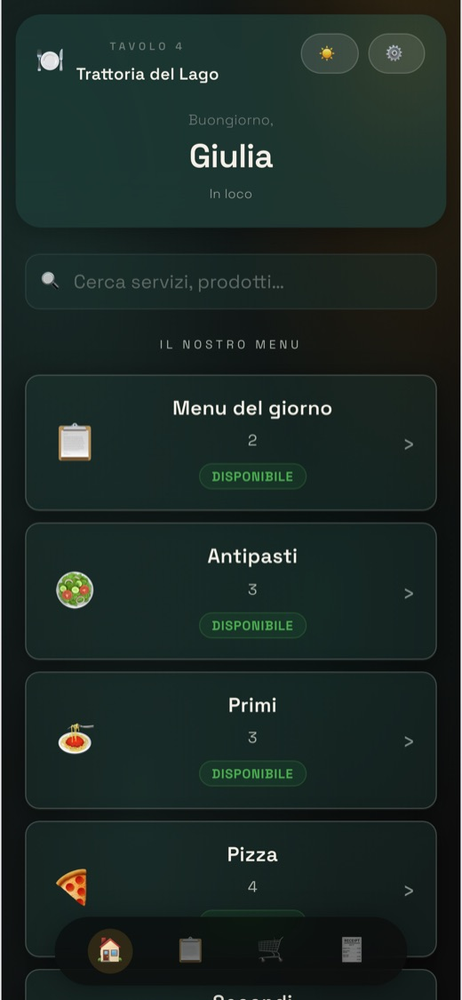
Trova il menù nella sua lingua
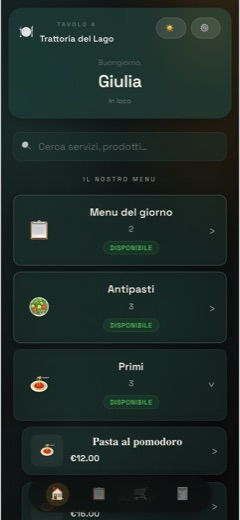
Sfoglia i piatti con i prezzi
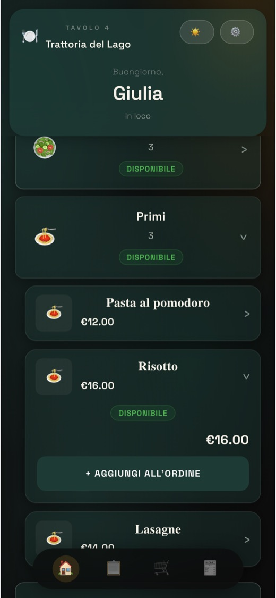
Apre il piatto e sceglie
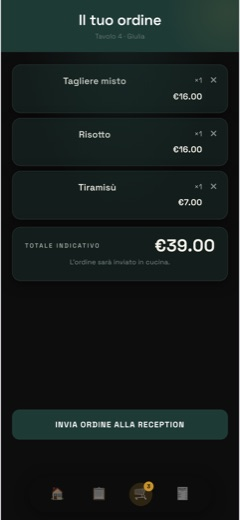
Controlla il totale prima di inviare
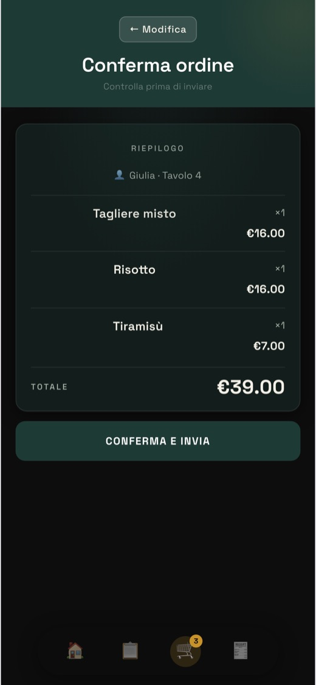
Ordine inviato
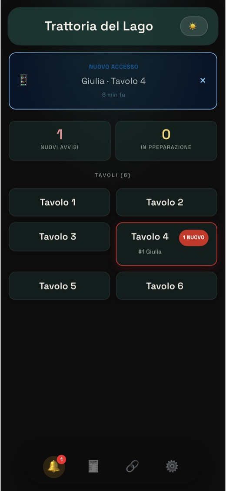
E arriva a te, tavolo per tavolo
Grafia illeggibile, errori di trascrizione, il foglietto che si perde tra il tavolo e la cucina.
Spiegare un piatto a un turista che non parla italiano, a gesti, mentre il locale è pieno.
Il cliente aspetta che qualcuno passi per ordinare, mentre il tavolo accanto reclama il conto.
Colgo supporta entrambi i modelli — puoi usarne uno solo o lasciare che convivano, sala per sala.
Il cameriere accede alla sua pagina personale con un PIN dedicato, prende la comanda a voce e la invia lui alla cucina. Il modello classico italiano — il cliente non tocca il telefono.
Il cliente scansiona lui stesso il QR, sfoglia il menù, aggiunge al carrello e invia l'ordine direttamente — nessuna attesa, nessun cameriere necessario. Diffuso in molti paesi asiatici, ancora raro in Italia.
Stesso catalogo, vista dedicata al cameriere: sceglie il tavolo, compone la comanda, la invia in cucina.
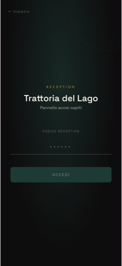
Il cameriere entra col suo PIN
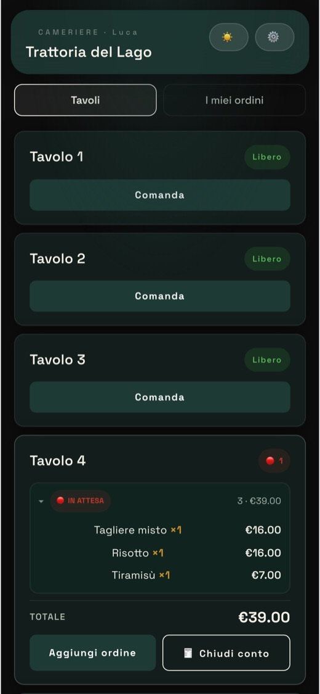
Vede i tavoli liberi e occupati
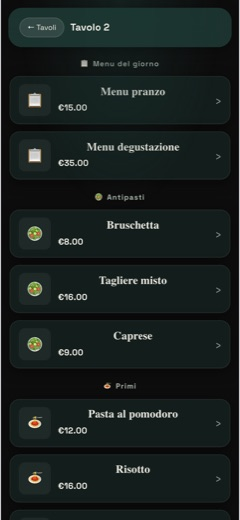
Prende la comanda dal menù
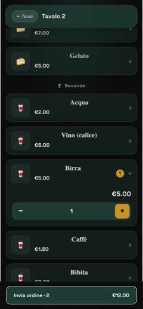
E la manda in cucina
Entri subito in una struttura di prova già pronta. Niente email, niente dati.
La tua struttura vera, i tuoi servizi, i tuoi QR. Nessuna carta di credito.
Risponde in base a quello che c'è su questo sito. Per il resto: colgoapp@gmail.com